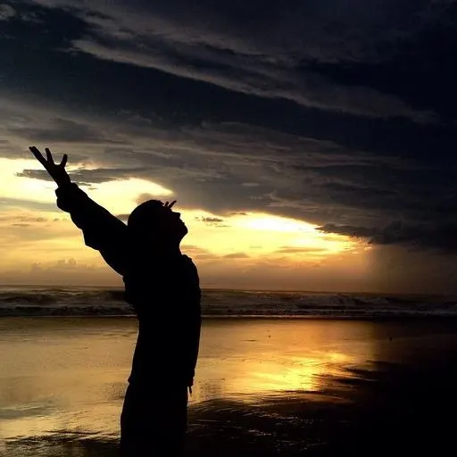
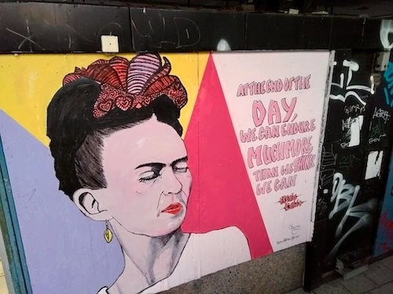
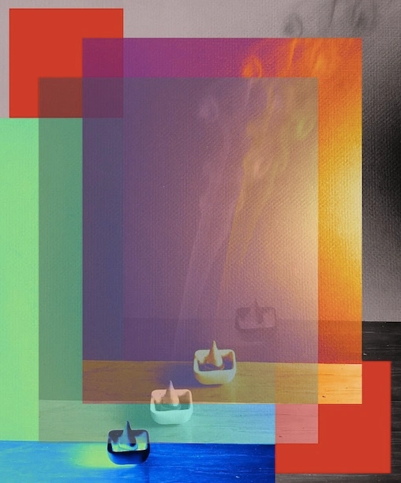
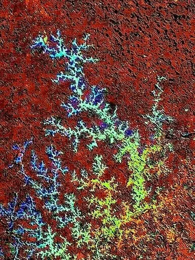

Lived experience · Recovery · Peer support
Raven's Peer Values
Restoring voice, reality, dignity, and self-determined change.
I am an OHA-certified Peer Support Specialist in Adult Mental Health and a systems navigator based in Portland, Oregon. I come to peer support from a life shaped by neurodivergence, queerness, transness, family chaos, grief, loss, suicidality, acute crisis, recovery, complex trauma, and repeated experiences with systems that can be overwhelming, confusing, dismissive, harmful, or difficult to navigate.
I know what it feels like to move through crises that touch every part of your life: to be misread, made invisible, pathologized, or slowly erased by systems that were supposed to offer care. I also know how survival can turn inward, how easy it is to self-abandon and lose your own voice just to stay safe.
Recovery, for me, has depended on people who listened without judgment, treated my experience as real, and did not try to fit me into a story that was not mine.
At the center of how I understand this work is the belief that people are whole, changing human beings whose needs, strengths, stories, and choices deserve dignity. It is not rescue, correction, or control. It is walking alongside people as they reconnect with their own reality, needs, boundaries, and inner compass.

Voice, choice, and dignity
People are not problems to solve
Peer support, as I aim to practice it, is about restoring a sense of reality and agency. It means listening without judgment, believing people when they name what they have lived through, and refusing to make someone smaller in order to make their story easier to manage.
This work is not about fitting people into a preset narrative of recovery. It is about honoring the person in front of me as the expert in their own life, while making room for voice, choice, autonomy, and self-determination.
Sometimes that means quiet presence. Sometimes it means asking what would actually help. Sometimes it means slowing down enough for someone to hear themselves again. Always, it means respecting pace, consent, context, and the right to choose what matters next.
Recovery as lived practice
Recovery is cyclical and nonlinear
I do not believe recovery is about correcting what is “wrong.” I believe it is about finding your voice again, staying connected to what matters to you, and remembering that you belong, even when the world makes that hard.
Recovery can be communal, cyclical, nonlinear, practical, emotional, relational, spiritual, ordinary, messy, and unfinished. It can include crisis, grief, humor, rupture, repair, rest, survival skills, new language, old patterns, and the slow return of choice.
My own recovery has been ongoing. I bring that lived experience into this work by meeting people where they are and walking beside them, not ahead of them. I am not here to become the authority over someone else’s life. I am here to help make room for their own authority to become more accessible.


Systems navigation and practical support
People are shaped by more than one story
People do not move through crisis in a vacuum. Housing, healthcare, benefits, transportation, legal or bureaucratic processes, money, safety, rest, documentation, relationships, stigma, and community can all shape what choices feel possible.
Practical support matters. Peer support can include helping reduce overwhelm, organize information, clarify options, prepare for appointments, document what matters, navigate housing or healthcare, understand next steps, or approach systems that feel confusing, dismissive, harmful, or hostile.
Alongside my peer support training, I bring a background in research, writing, teaching, advocacy, and hands-on problem-solving. I use that experience to organize information, clarify options, make overwhelming systems easier to approach, and help people feel less alone inside difficult processes.
My work is grounded in harm reduction, cultural humility, voice and choice, and respect for autonomy and self-determination. My training through NAMI Multnomah and certification through the Oregon Health Authority further ground this work in recovery and resiliency, trauma-informed practice, confidentiality, systems navigation, crisis response, and ethical use of lived experience.
I am open to supporting anyone navigating mental health challenges, crisis, stigma, systemic harm, housing instability, healthcare systems, legal or bureaucratic processes, or major life transitions. I bring particular understanding to work with queer, trans, and neurodivergent people, but my commitment is to dignity, agency, access to care, and the belief that no one should have to disappear inside the systems they are trying to survive.
No one should ever have to erase themselves in order to stay alive, be believed, access care, or have their humanity recognized.